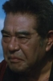

Also known as:座頭市逆手斬り (original title)
Country:Japan, 77 minutes
Spoken languages:Japanese
Genres:Adventure, Action, Drama
Director(s):Kazuo Mori
Writer(s):Shozaburo Asai
Video Codec:Unknown
Number: 2817


Certification:
Storyline:
Blind swordsman Zatoichi, jailed briefly, is implored by another prisoner to aid him in proving his innocence of a crime for which he is sentenced to death. Zatoichi is reluctant to get involved, because he knows how often such involvement has led to trouble in the past. But events conspire to thrust him repeatedly into involvement, and gradually he comes to believe in the man's innocence and determines to free him.
Cast: 


Medium: Bluray,
Comments: Part of: Zatoichi - The Blind Swordsman collection
Loaned: No
Aspect ratio: Unknown